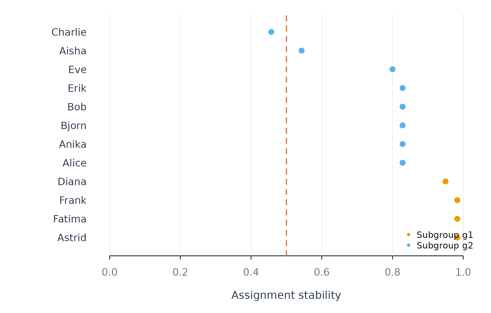

Discovering Person Subgroups with find_subgroups()
Source:vignettes/find-subgroups.Rmd
find-subgroups.RmdAnalytic question
find_subgroups() assigns people to subgroups based on
person-specific effects, prediction errors, repeated splits, moderators,
or mixtures of regressions. The function takes a repeated-measures
regression problem, a method, a group count, and a resampling count. It
returns group assignments and assignment stability for each person.
find_subgroups() uses effect clustering here. The method
estimates each learner’s regression coefficients and clusters those
coefficient vectors. Repeated resamples assess whether each learner
returns to the same group. Stability measures reproducibility of the
partition. It does not test whether separate populations exist.
Estimate a two-group partition
find_subgroups() clusters efficacy and monitoring
effects into two groups. Twenty resamples provide an
assignment-stability estimate.
subgroup_result <- find_subgroups(analysis_data, y = "effort", x = c("efficacy", "monitoring"), id = "name", method = "effect_clustering", k = 2, reps = 20, time = "day")
subgroup_result
#> Idiographic Subgroups
#> Method: effect_clustering
#> Subgroups: 2
#> People: 12
#> Sizes: g1=4, g2=8
#> Stability: 0.82 (how reproducible the partition is --
#> NOT evidence that the subgroups are real)
#>
#> Existence: not tested. Use test_subgroups() to ask whether any
#> subgroups exist before trusting this partition.
#>
#> Use groups(), test_subgroups(), fit_subgroups()find_subgroups() returns two groups and reports their
sizes. The print method also states that existence was not tested
because k = 2 was supplied. A stable forced partition can
occur in a population without discrete classes.
Inspect assignments
groups() returns one row per learner with the subgroup,
method, stability, and number of assignments. Table 1 sorts through the
public sort_by argument.
groups(subgroup_result, sort_by = "subgroup")
#> subject subgroup method stability n_assignments
#> 1 Astrid g1 effect_clustering 0.9833333 20
#> 2 Diana g1 effect_clustering 0.9500000 20
#> 3 Fatima g1 effect_clustering 0.9833333 20
#> 4 Frank g1 effect_clustering 0.9833333 20
#> 5 Aisha g2 effect_clustering 0.5428571 20
#> 6 Alice g2 effect_clustering 0.8285714 20
#> 7 Anika g2 effect_clustering 0.8285714 20
#> 8 Bjorn g2 effect_clustering 0.8285714 20
#> 9 Bob g2 effect_clustering 0.8285714 20
#> 10 Charlie g2 effect_clustering 0.4571429 20
#> 11 Erik g2 effect_clustering 0.8285714 20
#> 12 Eve g2 effect_clustering 0.8000000 20groups() shows which learners share a coefficient
pattern in Table 1. Stability values near one indicate consistent
reassignment across resamples. Values near the two-group chance level of
0.5 indicate uncertain membership.
Plot assignment stability
plot_subgroups() colours learners by subgroup and draws
the chance-level reference. Figure 1 orders learners within subgroup by
stability.
plot_subgroups(subgroup_result)
Figure 1. Resampling stability of each learner’s two-group assignment.
Figure 1 identifies learners whose assignments are stable and learners near the chance reference. Uncertain memberships should not be used as fixed labels without sensitivity analysis.
Assumptions and failure checks
find_subgroups() assumes that its feature representation
corresponds to the scientific definition of similarity. Effect
clustering groups coefficient patterns. Error clustering groups
prediction-error patterns. Model trees use person-level moderators.
These methods answer different questions and can produce different
partitions.
find_subgroups() requires enough people per requested
group and enough observations to estimate person features. Coefficient
skewness can create apparent classes (Bauer and Curran 2003).
k = "auto" delegates the group count to
test_subgroups() and can return one population.
When to use which
find_subgroups() is appropriate for estimating
assignments after the target representation and group count are
justified. test_subgroups() is appropriate for deciding
whether more than one population is supported.
fit_subgroups() is appropriate for evaluating whether
group-specific models improve held-out prediction.